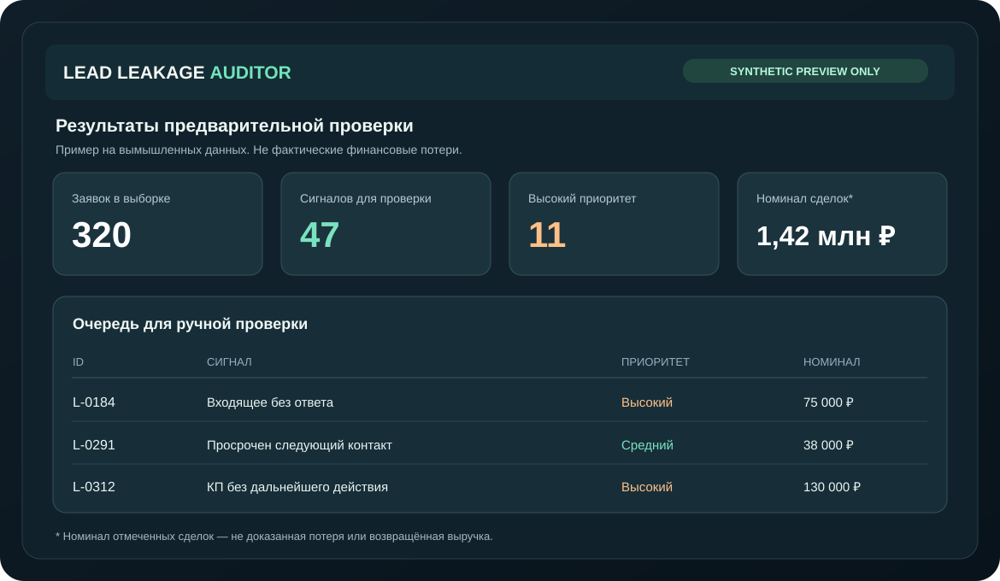

Заметьте заявки,
которые потерялись
в процессе.
Локальный анализ разрешённой CSV-выгрузки CRM: задержки ответов, забытые коммерческие предложения и просроченные действия. Очередь для проверки руководителем продаж, а не догадки о «потерянных миллионах».
Проверяем то, что сложно заметить вручную
Входящие без ответа
Проверка длительности ожидания реакции по зафиксированным CRM-событиям и установленному порогу.
Забытые КП и задачи
Поиск просроченных действий и предложений без последующего контакта в одной выгрузке.
Очередь проверки
Сводный список для менеджера. Сумма отмеченных сделок не приравнивается к подтверждённому убытку.
Как выглядит предварительный результат
Это графический пример на полностью вымышленных числах. Исходный код и исполняемая сборка находятся в отдельном приватном репозитории. Тестирование на реальной CRM требует разрешённой выгрузки и ручной сверки.

Числа и ID на изображении вымышленные. 1,42 млн ₽ — пример суммарного номинала отмеченных сделок, а не потерянной прибыли.
Сначала подтверждаем задачу. Затем предлагаем договор.
Ограниченная проверка согласованной обезличенной CSV-выгрузки. Результат — сигналы и очередь ручной проверки с указанными ограничениями.
Дополнительная сверка правил и формата данных, отбор приоритетных случаев, согласованная отчётность.
Эти суммы — неподтверждённые ценовые гипотезы и не публичная оферта. Точная стоимость, сроки, допустимая обработка данных, критерии приёмки, лицензия и сопровождение устанавливаются договором. Лицензирование, white-label и продажа актива — индивидуально.
Описать проблему без передачи клиентских данных
Расскажите, какая CRM используется, какая проблема возникает и какой результат хотелось бы получить. В публичных GitHub Issues нельзя размещать списки клиентов, платежные сведения и секреты.
Почта для коммерческих запросов: agenticcommerce975@gmail.com. Если почтовая программа на компьютере не настроена, скопируйте адрес и напишите со своей почты в браузере.
Что потребуется для пилота
- Описание бизнес-процесса и допустимых полей CRM.
- Обезличенная и разрешённая тестовая выгрузка.
- 10–20 эталонных случаев для ручной сверки.
- Договор с критериями приёмки и исправления дефектов.